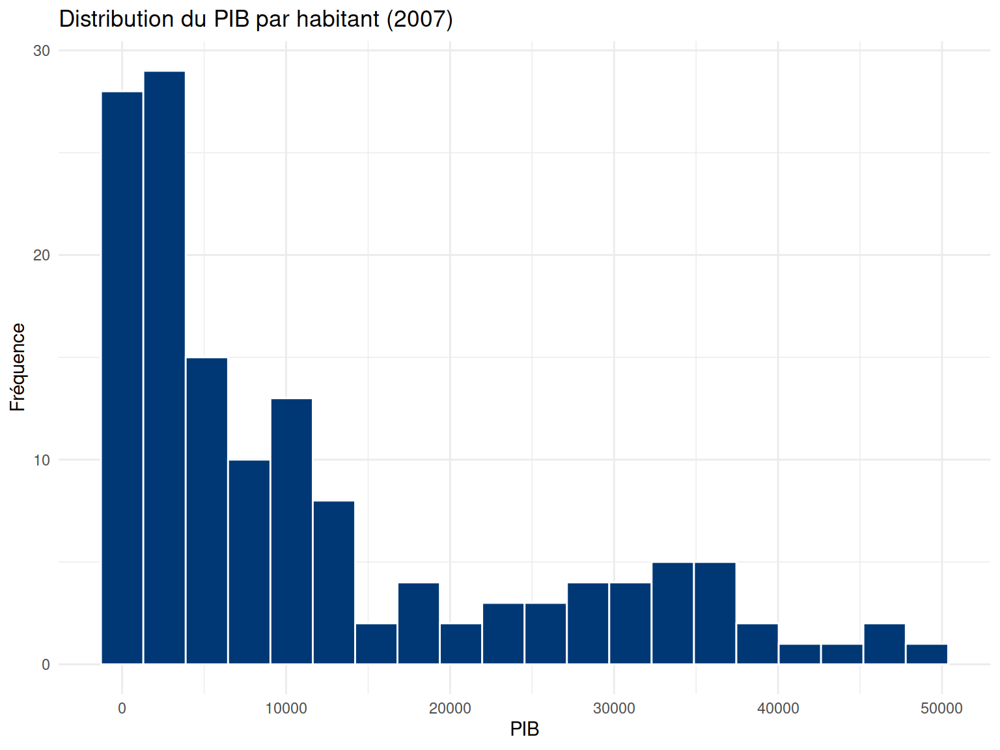
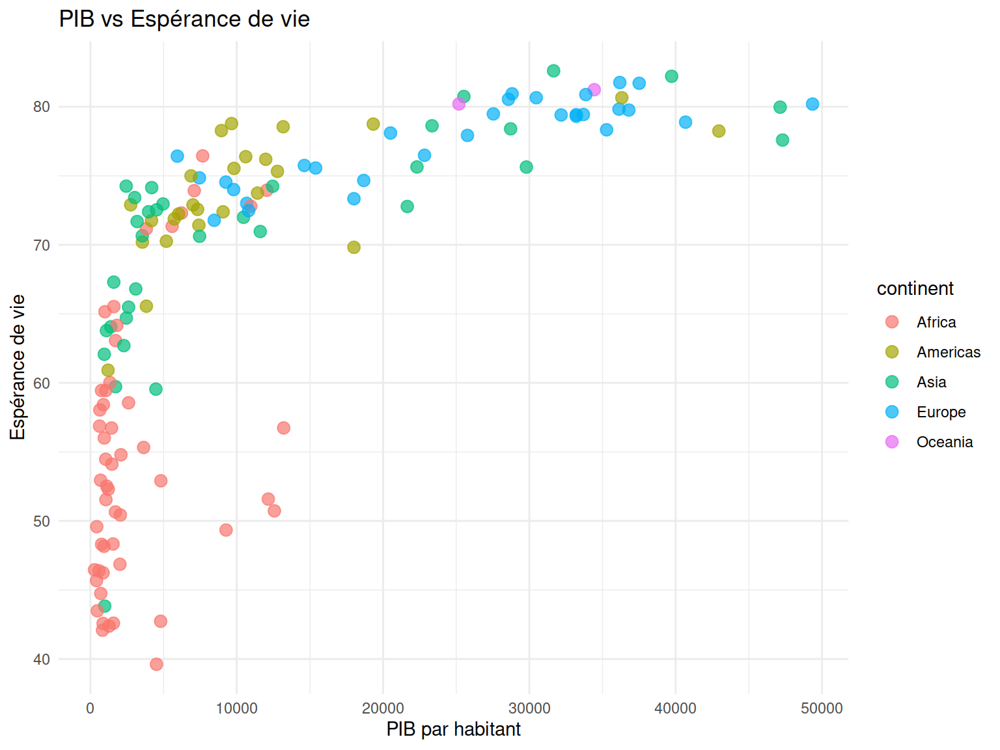

Analyse de données avec R - Faculté des sciences sociales
Auteur·rice
Université Laval
Date de publication
11 mars 2026
Introduction
Cet exercice pratique vous permet de consolider les notions vues en formation. Vous travaillerez avec des données réelles sur l’espérance de vie, la population et le PIB par habitant pour 142 pays (1952-2007).
Objectifs d’apprentissage
Manipuler des objets et des vecteurs
Importer et explorer un jeu de données réel
Effectuer des opérations de nettoyage avec dplyr
Créer des visualisations professionnelles avec ggplot2
Organisation : Placez ces fichiers dans votre dossier de travail.
Action : Ouvrez le script dans RStudio et complétez les sections marquées par # À COMPLÉTER.
Jeu de données : Gapminder
Le fichier donnees_pays.csv contient des indicateurs mondiaux provenant du projet Gapminder. Il inclut des variables comme le continent, l’année, l’espérance de vie (lifeExp) et le PIB par habitant (gdpPercap).
Exercice 1 : Objets et Vecteurs
Consigne : Familiarisez-vous avec la création d’objets dans R.
Créez un objet pays_prefere (type texte).
Créez un vecteur continents contenant les 5 noms de continents.
Créez un vecteur populations (valeurs numériques).
Utilisez la fonction class() pour vérifier le type de vos objets.
# A tibble: 6 × 3
country continent lifeExp
<chr> <chr> <dbl>
1 Japan Asia 82.6
2 Hong Kong, China Asia 82.2
3 Iceland Europe 81.8
4 Switzerland Europe 81.7
5 Australia Oceania 81.2
6 Spain Europe 80.9
Exercice 4 : Analyses par groupe
Consigne : Calculez des statistiques descriptives par continent.
Calculez l’espérance de vie moyenne par continent en 2007.
Identifiez le nombre de pays par continent dans le jeu de données.
# 1. Distributionggplot(donnees %>%filter(year ==2007), aes(x = gdpPercap)) +geom_histogram(bins =20, fill ="#003875", color ="white") +labs(title ="Distribution du PIB par habitant (2007)", x ="PIB", y ="Fréquence") +theme_minimal()

# 2. Relationggplot(donnees %>%filter(year ==2007), aes(x = gdpPercap, y = lifeExp, color = continent)) +geom_point(size =3, alpha =0.7) +labs(title ="PIB vs Espérance de vie", x ="PIB par habitant", y ="Espérance de vie") +theme_minimal()

Conclusion
Vous avez complété le cycle complet d’une analyse descriptive sous R : de l’importation à la visualisation.
Récapitulatif des acquis
Maîtrise des objets et types de données.
Utilisation des fonctions de base de manipulation (dplyr).
Création de graphiques informatifs (ggplot2).
Pour aller plus loin, explorez la documentation officielle du Tidyverse.